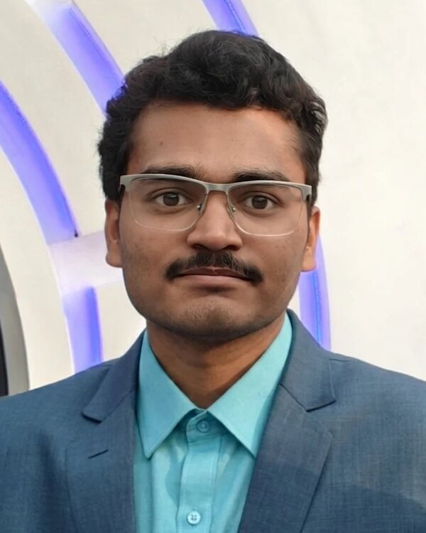

Giridhar Reddy Karnati
NPTEL Pre-Doc Fellow · IC Design Lab, IIT Hyderabad
Amateur radio VU2TIO

I am an NPTEL Pre-Doc Fellow in the IC Design Lab, Department of Electrical Engineering, IIT Hyderabad, where I work with Prof. Abhishek Kumar on the front-end of a wideband receiver in CMOS.
I am interested in RF and microwave instrumentation, wide-band antenna design and electromagnetic simulation, radio receiver characterisation, and field-deployable ground stations for satellite telemetry. Before IIT Hyderabad I was a visiting research student in the Astronomy & Astrophysics group at the Raman Research Institute, working on the architecture and bring-up of a water-vapour radiometer, and then a Facility Technologist Intern at the National Nanofabrication Centre (NNfC), CeNSE, IISc Bengaluru.
I did my B.E. in Electronics and Communication Engineering, with a minor in Computer Science, at Chaitanya Bharathi Institute of Technology, Hyderabad (2022–2026), where I received the Silver Medal for Academic Excellence. I am a licensed amateur radio operator, run a SatNOGS satellite ground station, and founded the HAM Radio Club of CBIT.
Research interests
- RF & microwave instrumentation
- Wide-band antennas & EM simulation
- Radio receiver front-ends
- CMOS RFIC design
- Satellite ground stations & telemetry
- Semiconductor devices & nanofabrication
News
- Named an IEEE SPACE 2026 Young Professional (YP) Laureate.
- Joined the IC Design Lab at IIT Hyderabad as an NPTEL Pre-Doc Fellow, working with Prof. Abhishek Kumar.
- Received the 2nd Place Best Intern Award in CICAD 2025–26, the antenna design internship by RaoS Consultants.
- Started as a Facility Technologist Intern at NNfC, CeNSE, IISc Bengaluru.
- Received the Dayton Amateur Radio Association Scholarship from the ARRL Foundation (USA), featured in QST.
- Attended IEEE MAPCON 2025 in Kochi as a B.Tech Initiative student, with a travel grant.
- Joined the Raman Research Institute, Bengaluru as a Visiting Research Student, working on a water-vapour radiometer.
- Gave a talk at HamFest India 2025, Goa, on running a private, self-managed LoRa satellite ground station with VayuVani, the open-source platform created by Chandra Tungathurthi.
- Selected as one of 100 students nationwide for the IISc Electrical Engineering Summer School (EESS-25).
- Won 1st place for paper presentation at VANSH-2K25 (Vignan Institute of Technology and Science) and for poster presentation at Aakruthi 2025 (University College of Engineering, Osmania University).
- Won the Best Paper Award at IEEE SCEECS 2025, MANIT Bhopal, for our paper on ground-station antennas for 433 MHz LoRa satellites.
Selected publications
-
IEEE
IEEE SCEECS 2025, MANIT Bhopal Best Paper Award
-
HFI
VayuVani: A Self-Managed LoRa Ground Station for Amateur Operators
HAM Fest India 2025 Magazine, Goa, pp. 20–27
Get in touch
Email is the best way to reach me. I'm happy to talk about RF and receiver design, antennas, satellites and amateur radio.